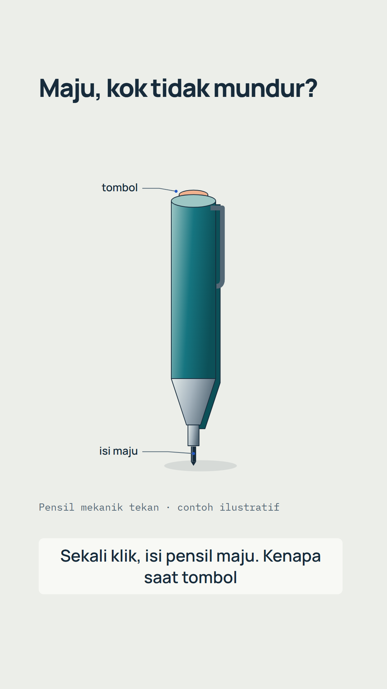
01: Maju, kok tidak mundur?
0.00–6.00s · estimate
Sekali klik, isi pensil maju. Kenapa saat tombol kembali, isinya tidak ikut mundur?

Sekali klik, isi pensil maju. Kenapa saat tombol kembali, isinya tidak ikut mundur?
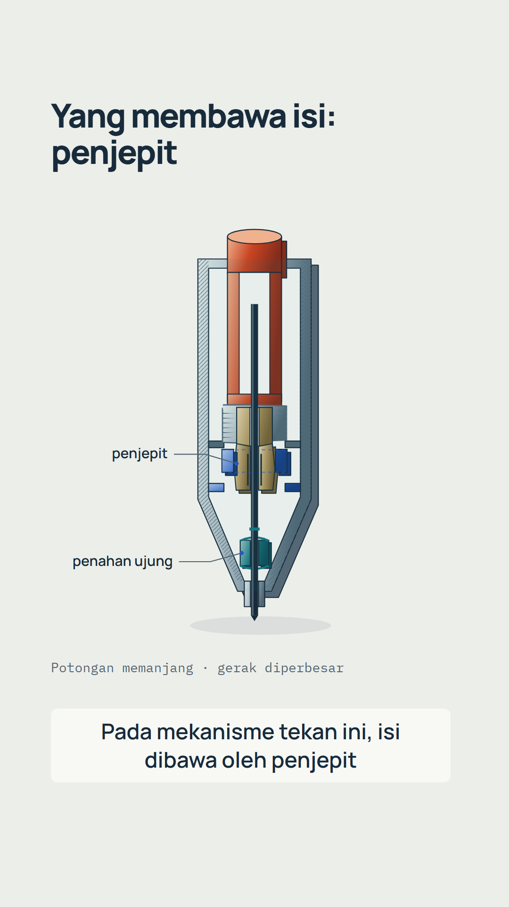
Pada mekanisme tekan ini, isi dibawa oleh penjepit kecil di dekat ujung pensil.
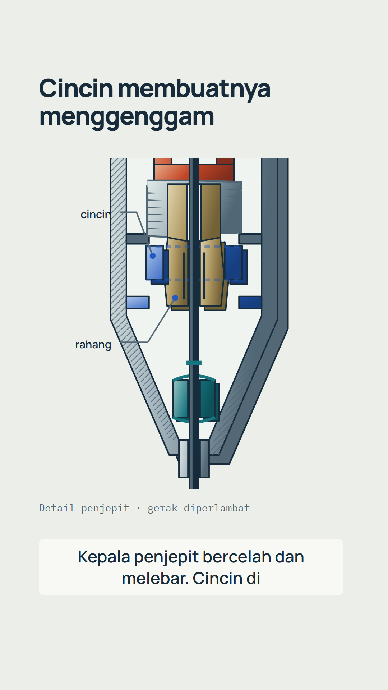
Kepala penjepit bercelah dan melebar. Cincin di luarnya merapatkan rahang, sehingga isi tergenggam.
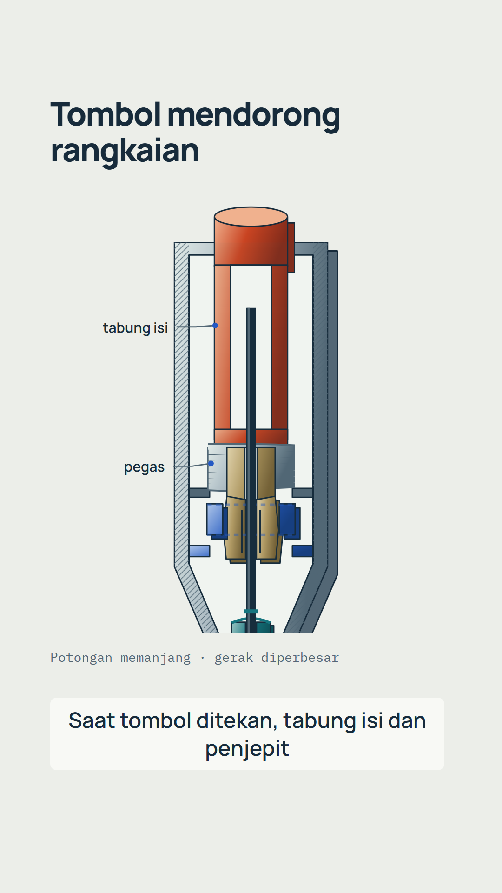
Saat tombol ditekan, tabung isi dan penjepit bergerak ke depan. Pegas di dalam ikut tertekan.
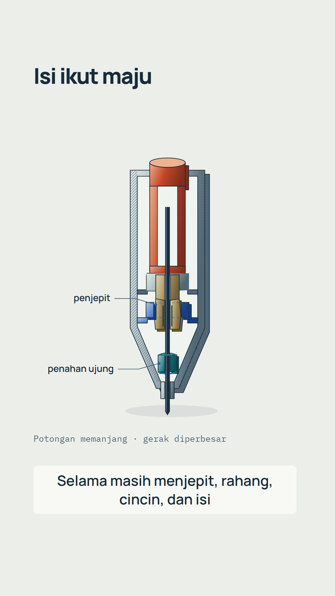
Selama masih menjepit, rahang, cincin, dan isi bergerak bersama. Isi melewati penahan ringan di ujung.
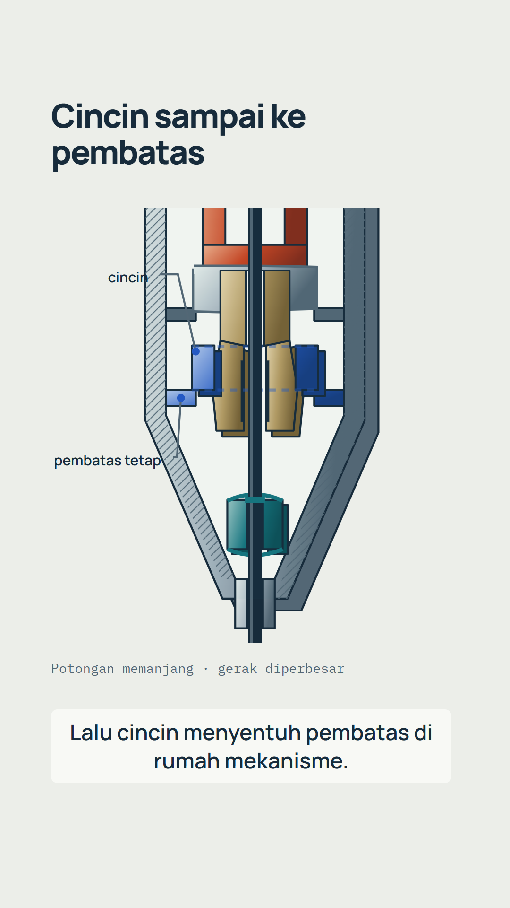
Lalu cincin menyentuh pembatas di rumah mekanisme. Cincin berhenti, tetapi penjepit masih bisa maju sedikit.
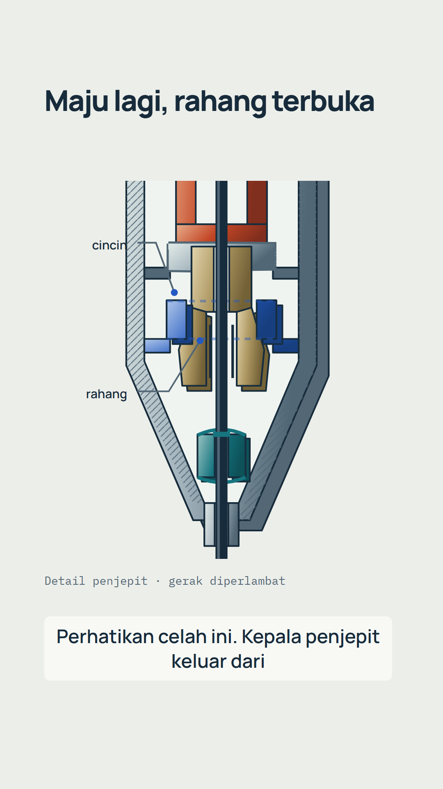
Perhatikan celah ini. Kepala penjepit keluar dari cincin, rahangnya membuka, dan genggamannya pada isi terlepas.
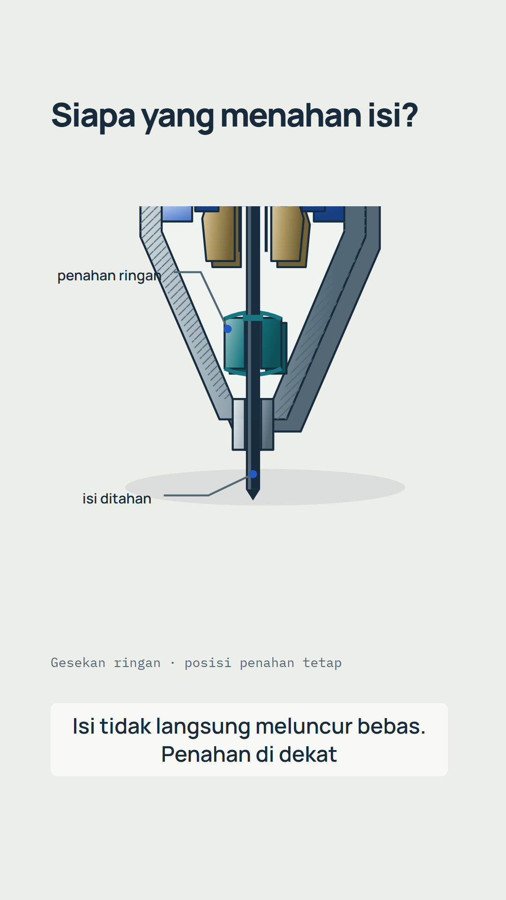
Isi tidak langsung meluncur bebas. Penahan di dekat ujung memegangnya dengan gesekan ringan.
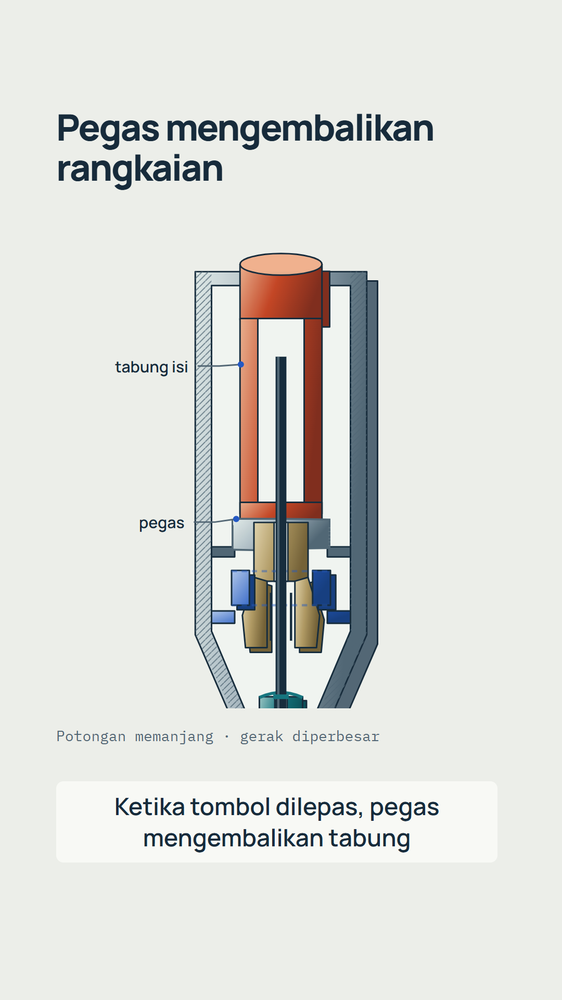
Ketika tombol dilepas, pegas mengembalikan tabung dan penjepit. Isi tetap di posisi yang sudah maju.
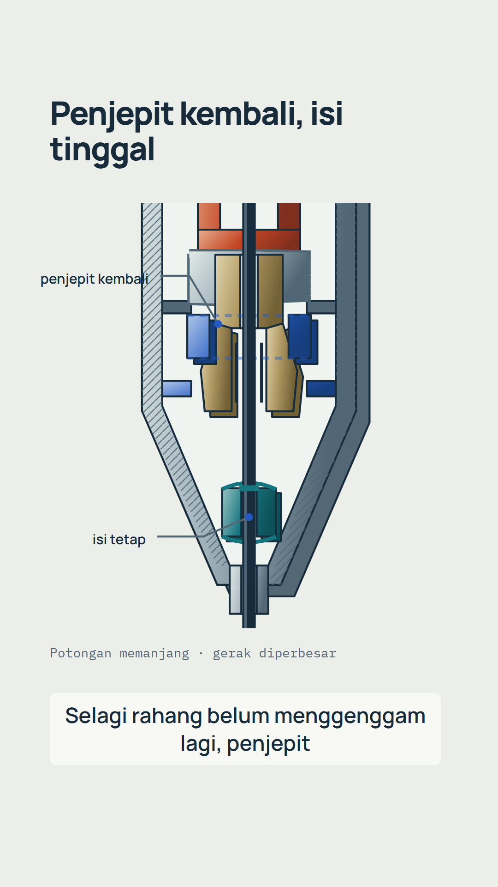
Selagi rahang belum menggenggam lagi, penjepit bergeser kembali melewati isi yang ditahan di ujung.
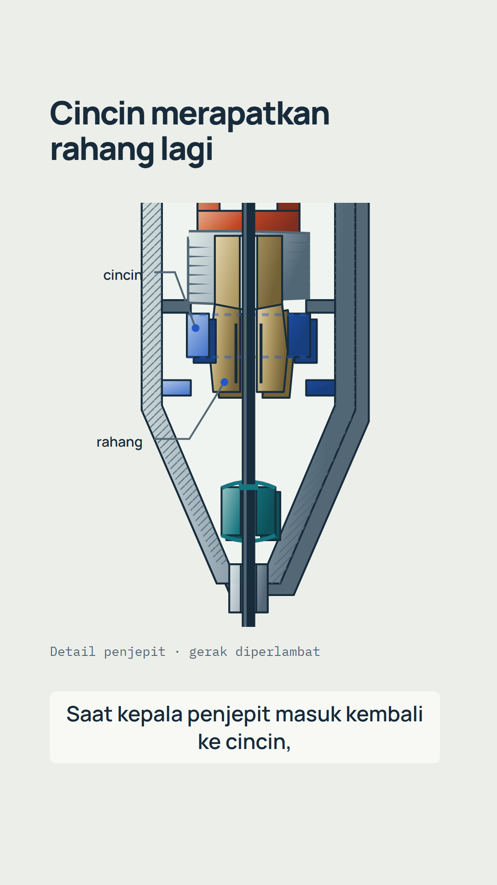
Saat kepala penjepit masuk kembali ke cincin, rahangnya merapat dan menggenggam isi lagi.
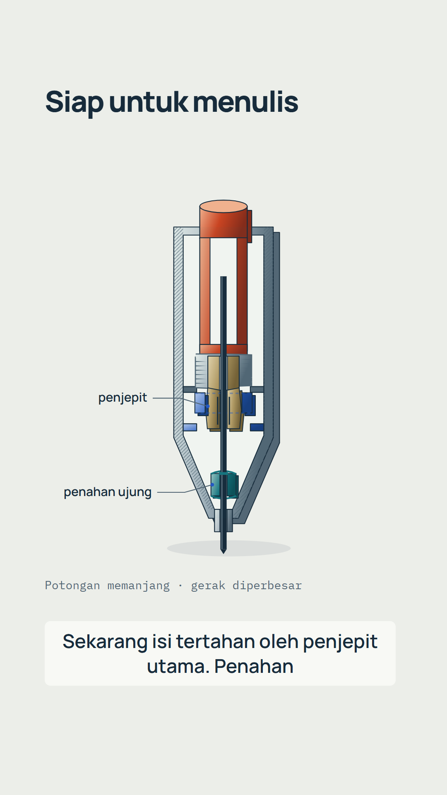
Sekarang isi tertahan oleh penjepit utama. Penahan ringan di ujung tadi membantu selama perpindahan genggaman.
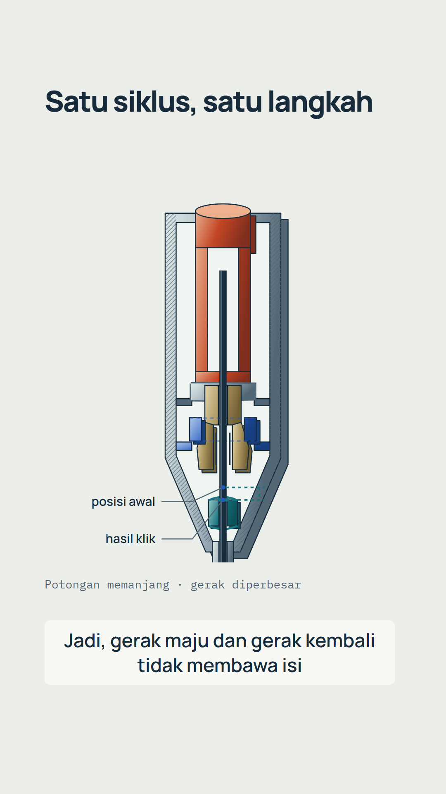
Jadi, gerak maju dan gerak kembali tidak membawa isi dengan cara yang sama.
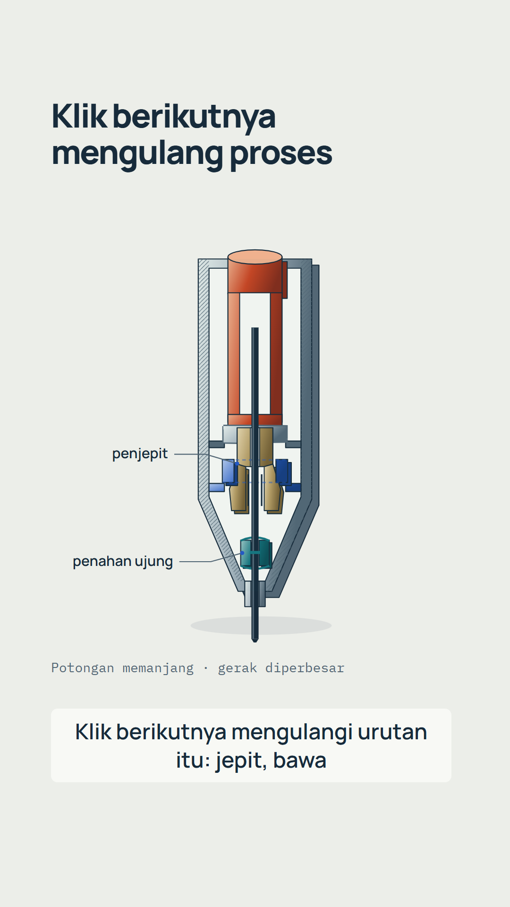
Klik berikutnya mengulangi urutan itu: jepit, bawa maju, lepas, lalu jepit kembali.
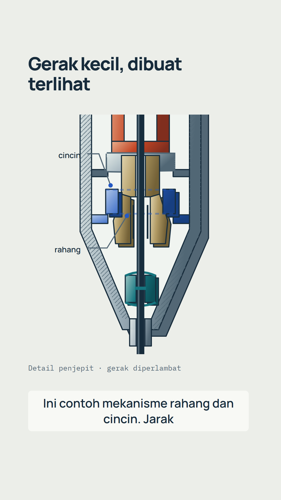
Ini contoh mekanisme rahang dan cincin. Jarak geraknya diperbesar agar perpindahan genggaman terlihat jelas.
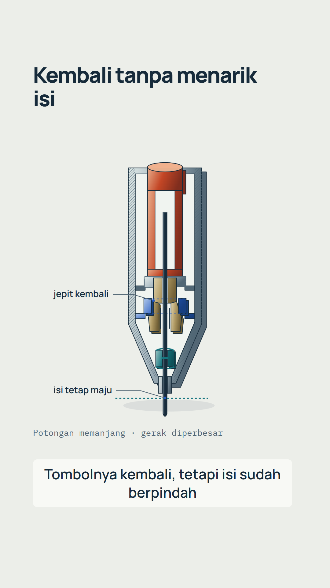
Tombolnya kembali, tetapi isi sudah berpindah pegangan. Itulah sebabnya setiap klik meninggalkan sedikit isi di luar.